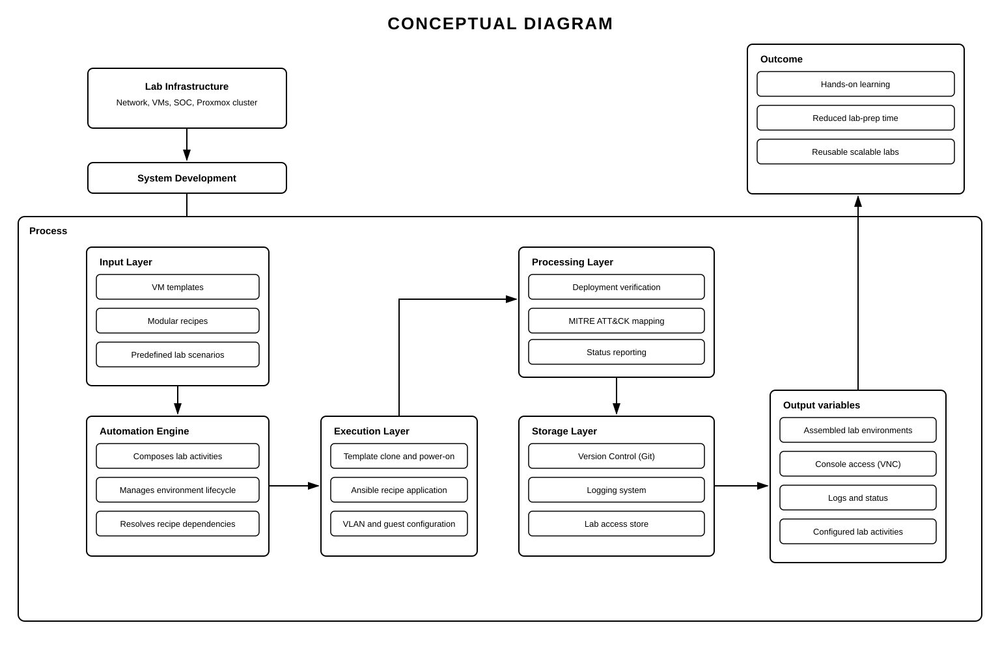
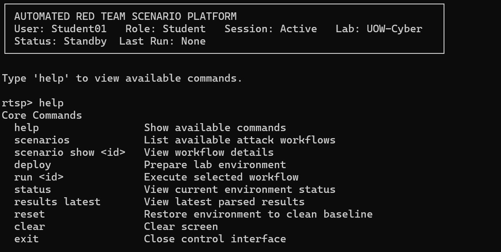
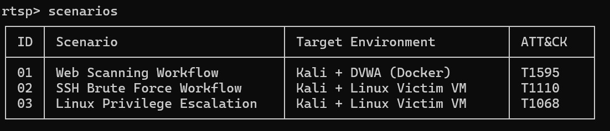
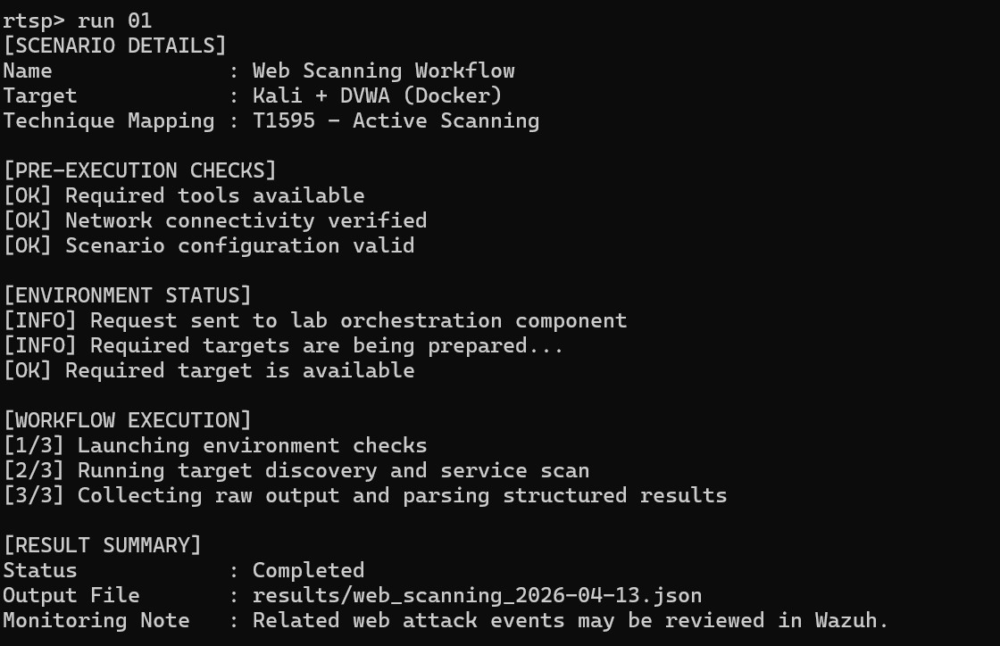
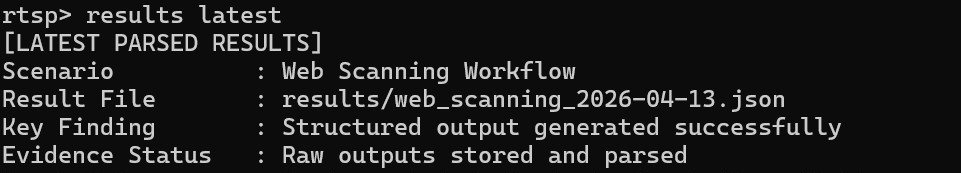
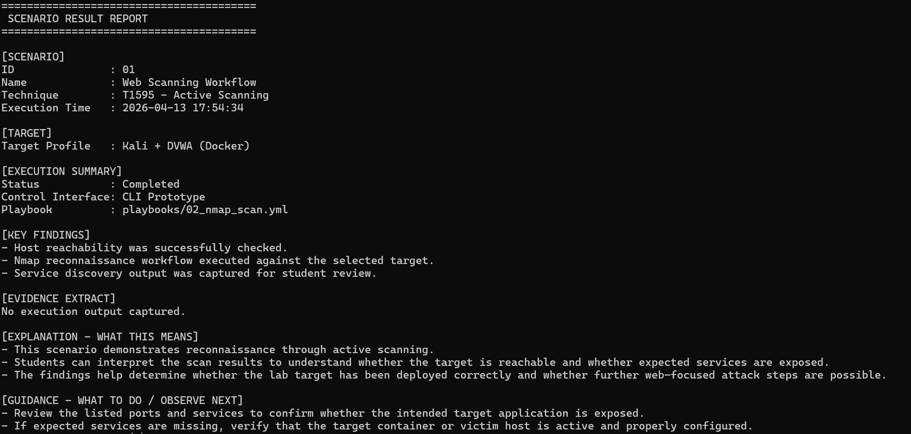

Refined problem: a lecturer-focused orchestration platform that automates provisioning, configuration, multi-seat deployment, access, and teardown — without the lecturer managing every VM or hypervisor task.
Build a lecturer-facing orchestration platform whose core is the recipe / scenario engine, not the hypervisor clone. The lecturer picks service recipes, vulnerability recipes, and scenario modules. The orchestrator resolves dependencies, generates Ansible/cloud-init artefacts, tracks status, and verifies that the teaching service actually came up.
Cloning and linked-clone rollout are delivery support on Proxmox. Students never log into the hypervisor. They open an opaque console URL bound to their seat. Each Lenovo runs update_workstation_ip.ps1 so the backend knows which IP is which workstation. A console token issued for ws1 cannot be reused on ws2.
MITRE ATT&CK IDs live as recipe metadata. The platform does not auto-execute attacks — it composes, verifies, and delivers the lab.

Context (static, instructor-heavy labs) leads to the artefact: a lecturer catalogue of service/vulnerability/scenario recipes, an orchestrator with dependency resolution and verification, and delivery support on Proxmox. Seat identity (workstation IP) plus opaque console tokens keep students on their own VMs. Click the diagram to enlarge once the image is in place.
Cloning VMs is supporting infrastructure. The distinctive logic is: compose a lab from YAML recipes, run it through the orchestrator, verify the teaching service, then bind opaque console access to a workstation IP.
Three YAML layers, kept as data so new labs do not rewrite Python:
recipe_engine.py loads the catalogue, resolves dependencies, and generates cloud-init + Ansible artefacts at deploy time. orchestrator.py (single lab) and scenario_orchestrator.py (multi-role, multi-seat) register status, wait for IP/SSH, run the generated playbook, then call the verifier. Lecturers design the activity; they do not reconstruct the stack by hand.
Long deploys run in a background thread. The dashboard polls status — it does not block on a 4-minute first configure. Stages are tracked separately because “clone accepted” is not “lab ready”:
ssh probe)deployment_verifier.py exists because a successful Ansible run is not enough. The teaching site must actually answer.
template_vmid values.localhost → guest IP) and issues HTTP checks with retries.VerificationReport per check.Students never receive a Proxmox login, VMID, or VNC endpoint. LabEye asks the lab API for a console URL; the student opens /console/<48-hex-token> on the Node.js noVNC proxy (vnc-proxy-server.js / fyp_proxy).
The token is not guessable and is not a VMID. It is stored in SQLite as token → deployment → VMID → workstation_id, with TTL (default 1 hour) and a revoked flag. Numeric URLs such as /console/301 are rejected so a student cannot change a number and land on someone else’s VM.
On open, the proxy POSTs the token plus the client IP to the lab API. Access is allowed only if the token is valid, the deployment is active, the VMID matches, and the client IP belongs to that workstation. Otherwise the student gets a generic 404 — no grant enumeration. Sessions are one-shot WebSocket upgrades; max two VNC sessions per VM; tickets stay on the server. Power actions use the same opaque token, never a raw VMID.
Each student Lenovo runs update_workstation_ip.ps1 (installed under ProgramData, scheduled at logon and every 30 minutes). The script is edited per seat: WorkstationId must match workstations.json (e.g. ws1). It picks the lab LAN IPv4 (preferred prefix 192.168.0., skipping loopback/Docker/WSL) and POSTs identity to the VNC proxy on the student VLAN:
POST http://<proxy>:8080/api/lab/access/workstation-ip → { workstation_id, ip, replace_ips: true }
The proxy forwards that into the lab API, which writes the IP onto the seat record. A local ip_heartbeat.log is also shipped to /api/lab/access/workstation-log for troubleshooting. Without this heartbeat, DHCP or a cable move would leave the backend thinking ws1 is still the old address — and console IP checks would deny the real student or, worse, bind the wrong seat.
Who needs that IP, and for what
| Service / part | Needs the IP for |
|---|---|
| update_workstation_ip.ps1 each Lenovo seat |
Detects the current lab IP and reports wsN → 192.168.0.x so the seat’s identity stays current after DHCP or a move. |
| fyp_proxy / vnc-proxy-server.js :8080 on student VLAN |
Ingests the heartbeat. On console open, sends the browser’s client IP with the opaque token so the lab API can authorise the seat. |
| lab_api + lab_access.py SQLite access_tokens + workstations.json |
Stores ips[] on the seat. Console grant requires: valid token + active deployment + matching VMID + client IP ∈ that workstation’s IPs. Same IP cannot sit on two seats. |
| Identify / register POST /api/lab/access/register |
Maps a dashboard-captured client IP to workstation_id before a deployment is bound, so ws17’s VMs are not registered to ws1. |
| LabEye (FYP-2A) F013 seat locking / Live VMs |
Uses the same IP→seat map so deploy and Live bind to the physical PC the student is sitting at. Staff may select multiple seats; students only see their own. |
| noVNC console grant GET /api/lab/console-url/ |
Mints the opaque URL only after the seat is ready. Opening it from another workstation’s IP is denied — that is the mechanism that stops students accessing others’ labs. |
| Level | Scope | Description | Risk |
|---|---|---|---|
| BASIC | Lab activity selection and package assembly |
The platform shall be able to:
|
LOW |
| INTERMEDIATE | Custom lab activity design and recipe authoring |
The platform shall be able to:
|
MEDIUM |
| ADVANCED | Multi-component scenario authoring and curriculum alignment |
The platform shall be able to:
|
HIGH |
Table 1.3 from the FYP2 report (Ch. 3.2.2). Methods map each project question to an objective and expected outcome.
| No. | Research question | Objective | Methods | Expected outcome |
|---|---|---|---|---|
| RQ1 | How can a lecturer-focused platform assemble customisable lab activities from reusable packages, modular recipes, and predefined scenarios? | RO1 — Lecturer-facing platform with VM templates and modular recipes | LiteratureExisting systems | A functional catalogue of lab packages and scenarios; lecturers can select and assemble a complete class activity. |
| RQ2 | To what extent can package selection, recipe authoring, and automated composition reduce time and complexity of preparing repeatable class labs? | RO2 — Automated composition and consistent instantiation | SurveyUAT | Reduced lecturer effort when designing, assembling, and reusing labs; more consistent student environments. |
| RQ3 | How can assembled labs be structured with selected tools and mapped to MITRE ATT&CK? | RO3 — Tool integration and ATT&CK mapping as recipe metadata | Literature | Structured lab activities that show tools and ATT&CK techniques covered, so lecturers can design realistic, comparable exercises. |
Design Science Research Methodology structures the work (identify, define, design, demonstrate, evaluate, communicate). Hybrid Agile-DevOps inside that loop: sprints for the lecturer catalogue and API, Ansible/Git as infrastructure-as-code for repeatable deploy.
| Platform | Type | Limitation for this lab | Selected? |
|---|---|---|---|
| MITRE CALDERA | Open-source adversary emulation | Strong ATT&CK-driven attack automation, but infrastructure must already exist. Not classroom-oriented; students would still have no seat-based lab delivery. | — |
| Cyberbit | Commercial cyber range | Enterprise polish and a large scenario library, but proprietary, expensive, and not designed for local customisation on a faculty cluster. | — |
| TryHackMe / Hack The Box | Cloud lab / CTF | No ownership of the university range; weak fit for lecturer-authored packages, VLANs, or per-workstation attacker/victim VMs. | — |
| BAS / SOAR | Attack simulation / IR playbooks | Useful contrast for automation, but they execute attacks or incident-response playbooks. This project assembles educational labs, not live adversary runs. | — |
| This project (2B) | Lecturer-focused orchestration | Needs richer catalogue content, documentation, and full-class load testing. Advanced multi-component authoring remains stretch. | ✓ SELECTED |
CALDERA automates attack techniques. Cyberbit automates vendor scenario delivery. This project automates VM clone, VLAN tagging, recipe application, post-deploy checks, console grant, and teardown/TTL.
Not the core of CALDERA. Vendor-operated in Cyberbit. Core product here: recipe/scenario orchestrator, dependency resolution, and post-deploy verification. Cloning is delivery support.
Runs on the existing faculty Proxmox cluster with no commercial range licence. Students use a browser console; they never receive hypervisor credentials.





Click an image to enlarge.